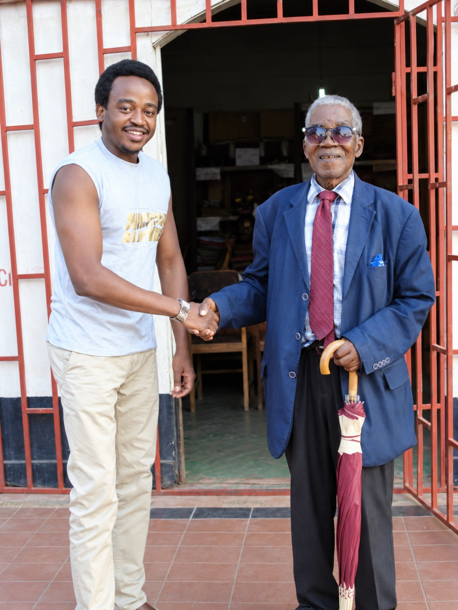

Ask for a book on WhatsApp
Ask fellow readers for a recommendation or a lawful source for a book.
Ask for a book →Join Lets Read Malawi WhatsApp group ↗Discover books, read freely and share the joy of reading. Tiyeni tiwelenge.
Find your next read with the community, or offer books from your shelf.
Ask fellow readers for a recommendation or a lawful source for a book.
Ask for a book →Join Lets Read Malawi WhatsApp group ↗Tell us how many books you can offer and your area. We’ll discuss possible collection on WhatsApp.
Offer physical books →Future school and prison distributions depend on collection plans and permissions.Choose a language to find available titles. Most released books are currently in English; some languages have no titles yet. The catalogue shows the actual counts. Language selection does not translate a book.
On her way home, Chisomo found a book near the market.
English — originalWe welcome Chichewa, Chitumbuka, Chiyao, Chilomwe, Chisena, Chitonga, English and other world languages.
Some languages may have few or no books yet. Help us grow through original writing and legally licensed translations.
Quality promise: Translations are checked by people fluent in the language before publication.
Explore reading activities, study tools and learning programme enquiries.
ReadMalawi began with a simple idea: more people in Malawi should have the chance to enjoy reading.
In 2019, The Nation reported on a proposed ReadMalawi initiative and discussions with Malawian writer and historian DD Phiri.
Since then, ReadMalawi's practical activity has been sharing digital books in a WhatsApp reading group. The online library is now open. Our next priorities are improving catalogue quality and adding reviewed local-language reading material. Distributing physical books to schools and prisons is a future ambition, not a completed project.
Community initiative · Not yet a registered NGO
Founder, ReadMalawi · Malawi
Jones Nalikungwi is a Malawi-based digital professional and the founder of ReadMalawi. He believes reading should be easy to discover and enjoy, whatever a person's age or preferred language.
His vision is to grow ReadMalawi from a digital book-sharing community into a trusted reading space for Malawi, with more stories and learning materials available in local languages and, in time, book-access partnerships for underserved communities.
In June 2019, The Nation reported on Jones’s discussions with the late Malawian author and historian DD Phiri about the proposed book-sharing initiative. The article documents the early vision, rather than a completed book-distribution programme.
In the news: “DD Phiri reading project in offing” — The Nation, 12 June 2019 ↗
“Tiyeni tiwelenge” — Let's read.
Yes. You can read original ReadMalawi stories and approved library books online at no charge. Other contributed books appear only after permission checks.
Choose a title in the library and open “More” on its card, then choose “Reader comments.” Comments require email sign-in and librarian approval.
Tell us the number of books and your general area using Give physical books. Collection is discussed on WhatsApp.
You can choose your preferred language to search for books. Local-language titles are added as permissions and translations are reviewed.
Our guided Reading Buddy and browser-only Smart Study Sprint are available today. A more advanced AI coach and commissioned learning workshops are in development or available for pilot enquiries. Explore the Study tools Lab.
Voluntary contributions help cover ReadMalawi’s hosting, library maintenance, reading accessibility and reviewed local-language materials. Reading remains free; contributing does not buy a book or subscription. Contributions start at MK700 through TNM Mpamba or FCB. View the account details and confirmation steps. ReadMalawi is not yet registered as an NGO or charity. PayChangu checkout and paid subscriptions remain inactive.
Questions, book offers or partnership ideas? We would like to hear from you.
Email: info@readmalawi.fyi
Phone: +265 882 242 594
Postal address: P.O. Box 30415, Blantyre, Malawi